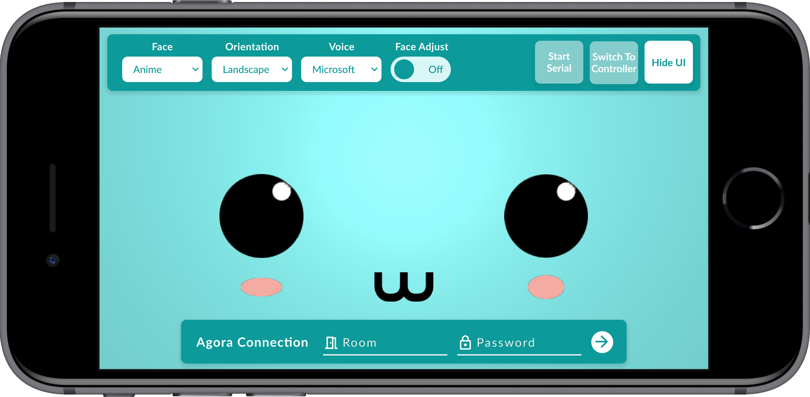
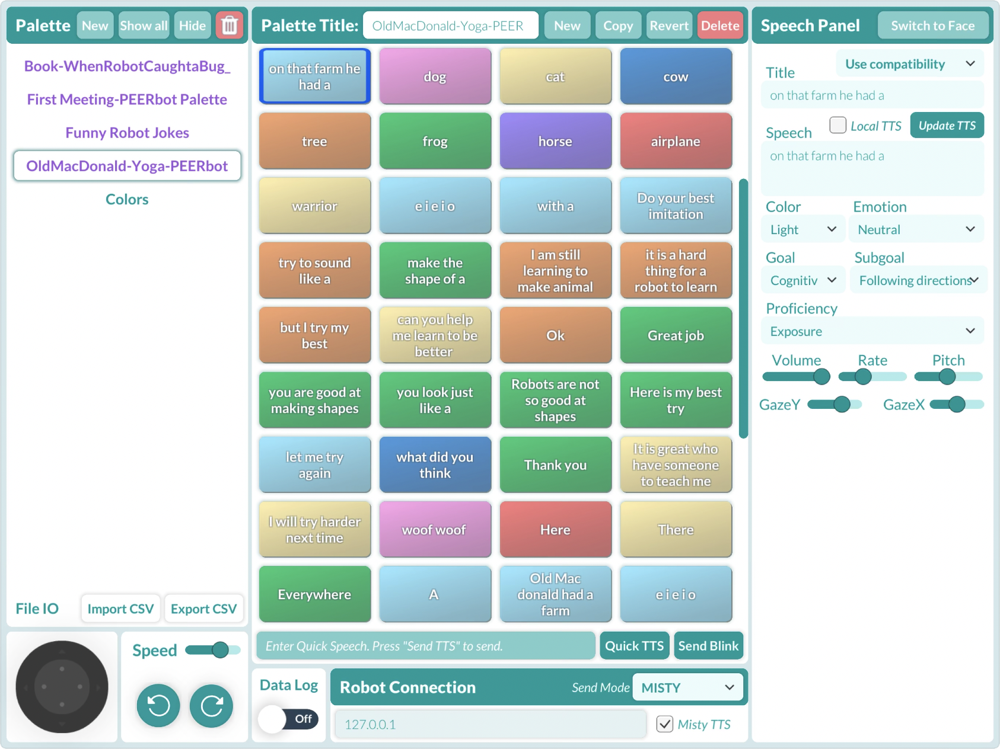
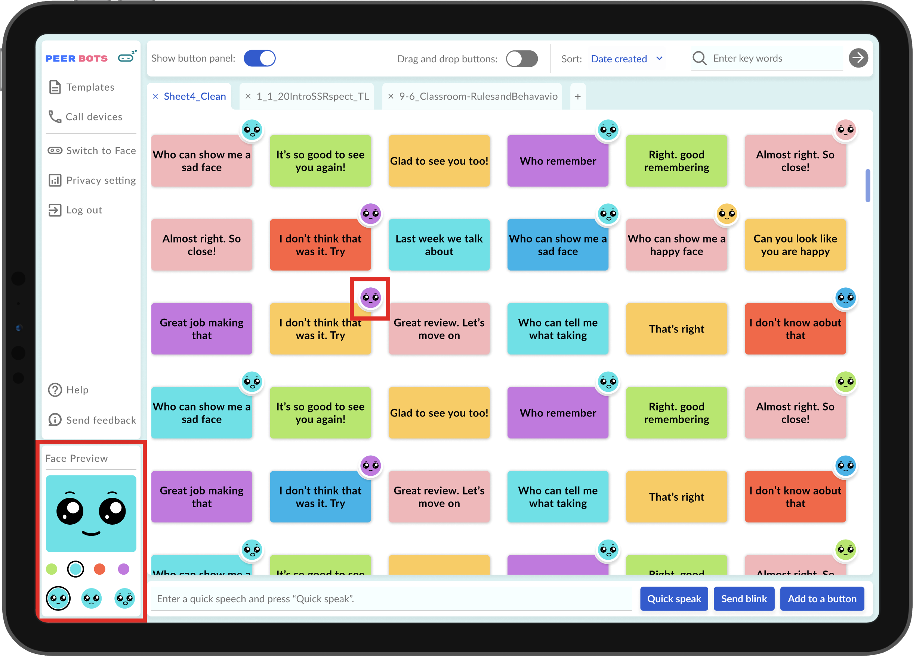
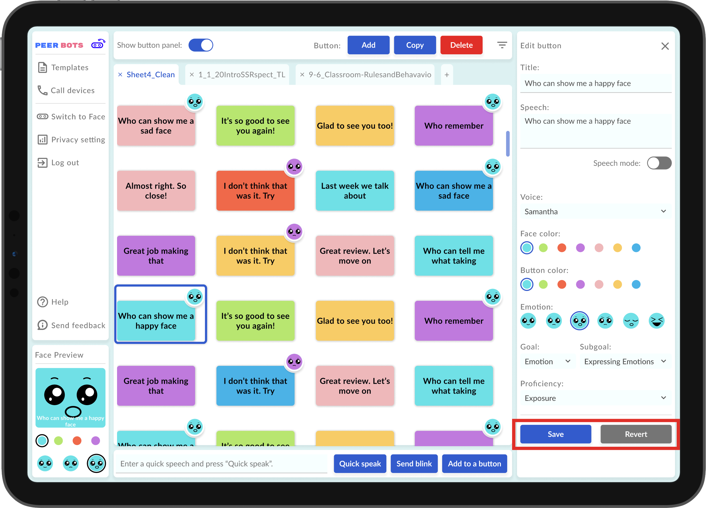
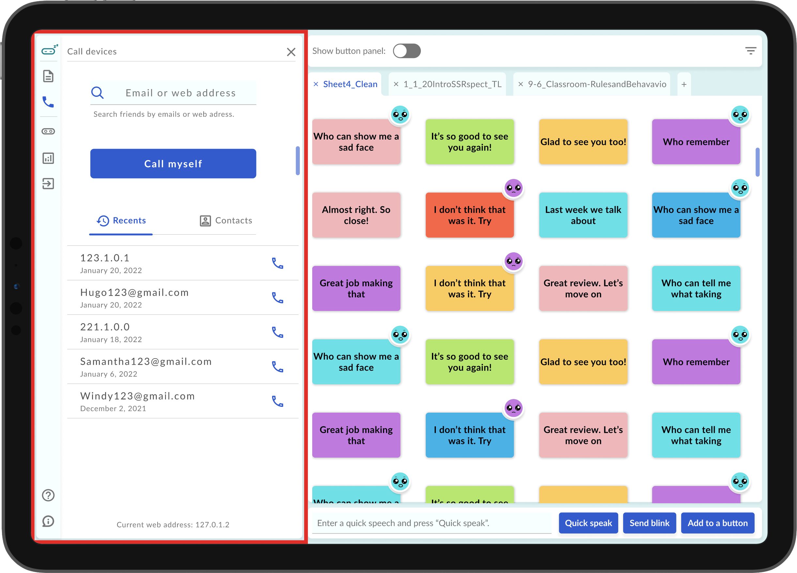
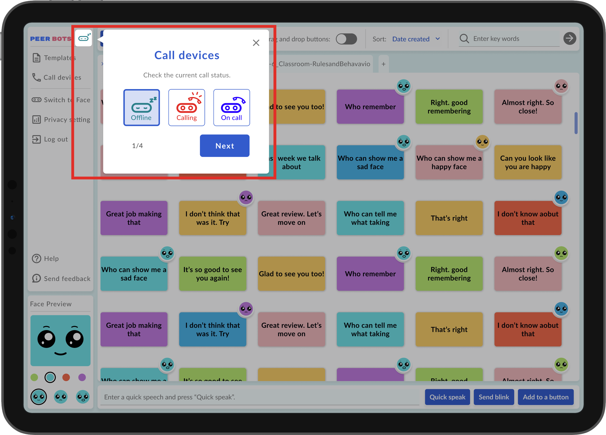
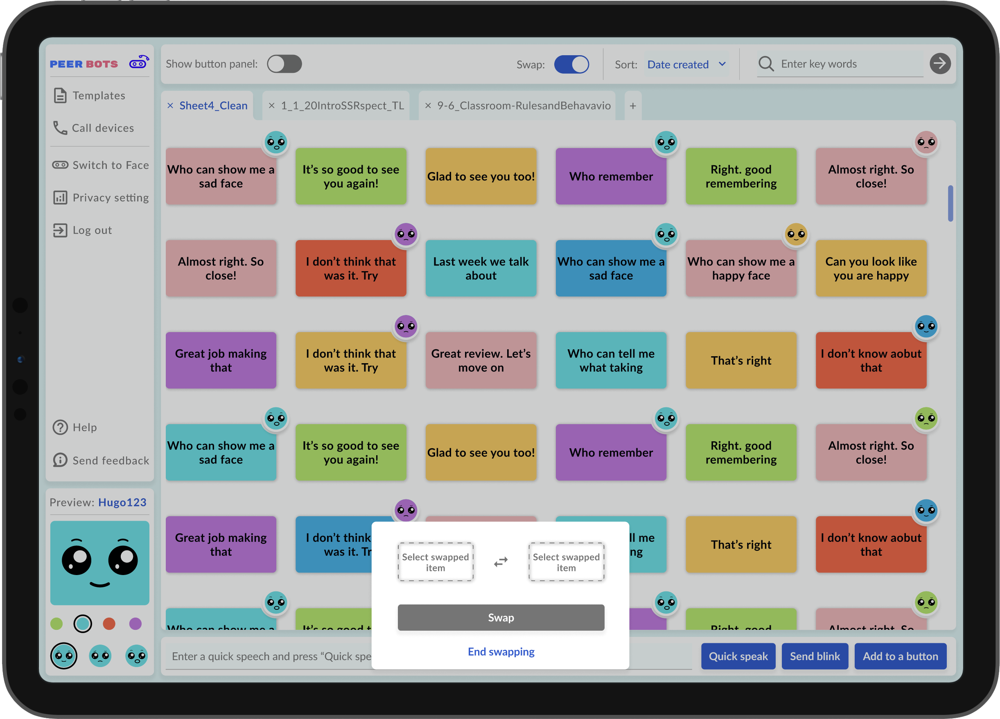
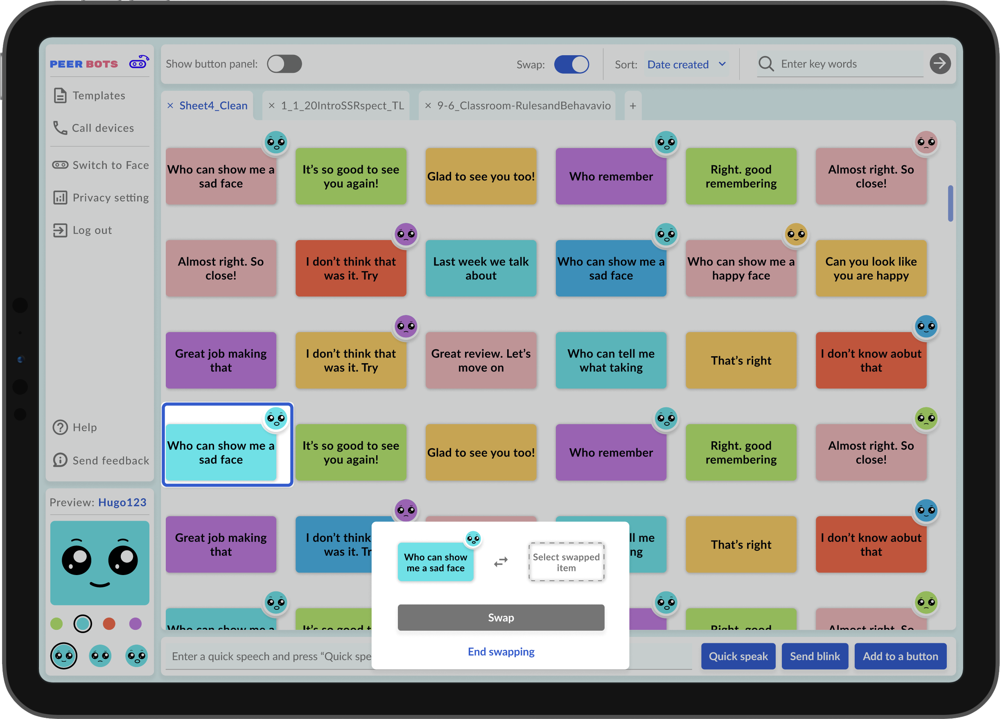
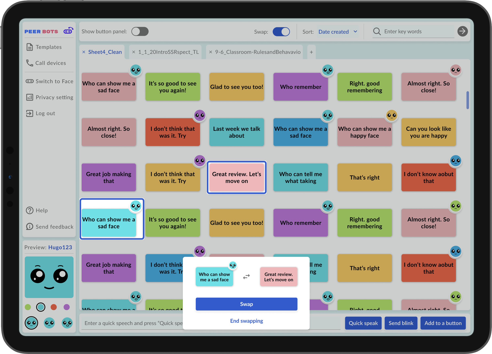

Peerbots is an affordable assistive technology created by
Peerbots, Inc., a non-profit, to provide therapeutic services in both
in-person and virtual settings. With Peerbots's software
application, the therapist is able to use a mobile device to
control a digital voice and face on the patient's mobile device.
This technology does not require users to purchase any robots,
which significantly reduces the cost of enabling technology
during therapeutic services. At the same time, it operates
existing robot platforms such as Misty. This application is
currently available on the
App Store
and
Google Play Store.
Project Scope
While Peerbots' application greatly benefits therapists,
teachers, and people with social disabilities, there is room to
improve its user experience and user interface. The concept of
telepresent and content authorization confused users, especially
therapists who never used technologies during their therapy
sessions. The interface that requires many technical operations
also overwhelmed the non-tech-savvy users. Due to limited
development resources (only having one developer and limited
software budget), the main goal for this project is to upgrade
the user experience and accessibility within the constraints of
development power.
Initial Design
1st Impression
I was introduced to the interface on the left when I started working
for Peerbots. The developer built the interface using generic Unity
UI components. Here is my first impression of this version of the
interface:
Controller Interface
Original controller interface - Application screenshot
Pros:
Easy access to all content at once.
Fast navigation with minimum clickings.
Colorful and cute interface to attract children.
Theme-matching robot style.
Differentiation between operating spaces using two
color schemes.
Cons:
Inaccessible color contrast for some components.
Inconsistent stylings.
Overwhelming amount of content.
Unsure of what it is without explanation.
Too little space for the final operation screen.
Debug information is not hidden.
Face Interface
Original face interface - Application screenshot
Pros:
Easy access to all content at once.
Fast navigation with minimum clickings.
Colorful and cute interface to attract children.
Adorable robot cartoon.
Cons:
Confusing data and instructions.
Inconsistent stylings.
The robot's face is covered.
Debug information is not hidden.
User Interface Design
Goal
For this phase, I worked with the developer to switch the color
scheme and upgrade the user interface. The goal for the phase is to
make the interface more readable and pleasant with minimum
development changes and time. Because of the time constraint, I
prioritized a few items to achieve for this phase. This design is
implemented on the application currently available on the
App Store
and
Google Play Store:
Hide unapplicable panels under certain connection
modes.
Rearrange buttons to increase spacing.
Highlight selected components.
Face Interface

Redesigned face interface - Figma prototype screenshot
Achieved:
Removed debug tools and information.
Regrouped components under the same categories.
Replaced some technical terms with plain language.
Replaced button with a toggle switch.
To do:
Choose more accessible colors.
Match stylings with the one from the controller
interface.
Replace technical terms with plain language.
Result

You may find that the actual application looks different from
the Figma prototype. That's because:
Unity, the development platform we use, had some development
constraints.
We can only prioritize the development of a few designs within
a limited amount of time.
The final application is the product of what the developer and
I agreed on based on our development capacity and time.
User Experience Design
After the user interface upgrade, we successfully got support
from our funding partner to improve the user experience with new
user flow and cloud service. Following this guideline and my
discussions with the developer and researchers, I created a
high-fidelity prototype on Figma with a new user flow. In this
design, user flow is more vertical which helps guide the user
through the navigation process. Using this prototype, I hosted 2
focus groups with a total of 5 therapists in 2 days. All
therapists were volunteers connected through our funding
partner. Some of them had experience conducting therapeutic
sessions with robots (including non-Peerbots products) before. I
selected a few design improvements I made based on the findings
we learned from the focus groups and development capacity.
Therapist: I had to use 2 devices to see the preview when authoring
content.

Some therapists couldn't author content with the controller device
stand-alone because they couldn't see the real-time feedback of
the robot face. This could be frustrating because they may not
have access to two smart devices. Based on this finding, I
added a face preview panel on the controller side
so therapists can work on the content without having / pairing two
devices.
In addition, I also
added facial expression icons on the buttons
so therapists can quickly identify the facial expressions
associated with each button. The icon is only available for
non-default options (tilt color and smiling face) to avoid
cluttering the interface.
Therapist: I am not sure how to finalize the changes I made to the
buttons.

Some therapists were uncertain about their changes to the buttons.
They found it unclear when and how the changes are finalized.
Based on this finding, I
added the "Save" and "Revert" buttons as
safety measures to confirm their changes. In this way, they have
complete control over the changes they desire, and their thoughts
won't be interrupted by the autosave.
Therapist: I am not sure what the connection is or how to connect.

Some therapists, especially non-tech-savvy therapists, had trouble
understanding the teleoperation process and how to pair the
devices. The connection process was strange and confusing,
especially without any explanation. To make this process more
intuitive, I decided to reframe the connection process and
simulate the calling process that people
are more familiar with. In this way, therapists can simply pair
devices by calling others' email addresses or web addresses.
Therapist: I won't click on anything that I don't know about.

Different from the generations that are more comfortable with
technology, therapists who have less exposure to technology
hesitated to explore the interface. Worrying about the consequence
of clicking on any buttons, some therapists don't like to click on
anything unless there is enough information about the button.
Based on this finding, I
reworded some of the buttons and
created a series of tutorials to give
further explanations of the product.
Developer: We can't prioritize developing the drag and drop feature.



It's difficult for our sole developer to develop the drag and drop
feature on Unity within a short amount of time. After understanding
what is more practical to develop, I designed a 3 step swap feature.
Although swapping isn't as user-friendly as drag and drop, it makes
more sense to our current development capacity and project deadline.
However, as we continue improving the product, the drag and drop
feature will be the next feature we aim for.